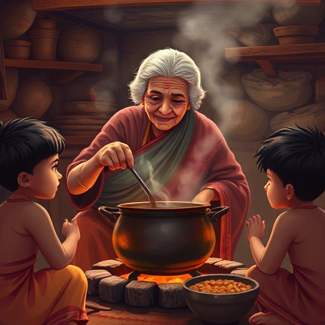

Grandmother's Tales
In the warm embrace of my grandmother's stories, Telugu folklore comes alive. Each evening, as the sun sets and the stars begin to twinkle, her gentle voice weaves magic through ancient tales of wisdom, love, and tradition. From the mischievous Tenali Raman to the brave stories of our ancestors, every word carries the essence of our rich cultural heritage.